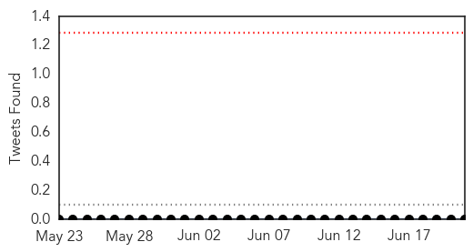
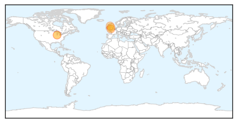
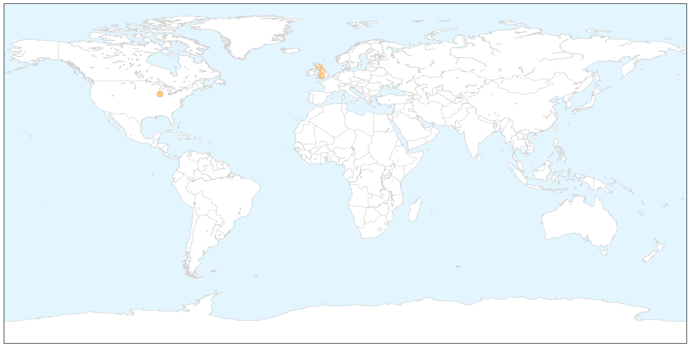
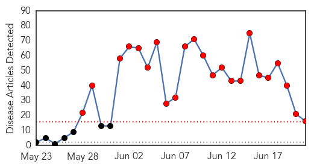
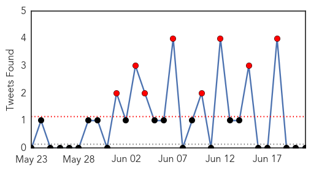
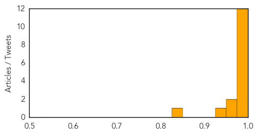

Meningitis
30-Day Web Trend
0 alerts, 0 warnings

30-Day Twitter Trend
0 alerts, 0 warnings

Article Locations

X

Article Confidences

Top Articles:
- 0.990
- Chicago health officials encourages all gay and bisexual men to get vaccinated against invasive meningococcal disease
- 0.872
- New meningitis vaccine drive ‘will save thousands of lives’
- 0.831
- Meningitis vaccinations requirements around the world
- 0.813
- Public health emergency: UK teens to get meningitis jab
- 0.624
- Babies in Scotland to be get meningitis B vaccine from September
- 0.612
- Meningitis B vaccine to be offered to babies on the NHS from September
- 0.559
- Meningitis B added to routine vaccinations
Top Tweets:
-
No tweets found for Jun 21, 2015
MERS
30-Day Web Trend
23 alerts, 0 warnings

30-Day Twitter Trend
8 alerts, 0 warnings

Article Locations


Article Confidences
Top Articles:
- 1.000
- WHO declares MERS outbreak in South Korea as 'large and complex'
- 1.000
- With MERS Outbreak Reaching Thailand, What Do Malaysians Have To Be Prepared For?
- 0.999
- UAE Reports MERS Death
- 0.999
- MERS: understanding the mysterious virus
- 0.998
- Oriental medicine may help treat MERS
- 0.998
- S.Korea Reports Another MERS Death, Sees Signs Outbreak Easing
- 0.997
- Expert talks about MERS and the Korean outbreak
- 0.996
- First suit filed over authority’s response to virus-INSIDE Korea JoongAng Daily
- 0.994
- MERS shows no sign of abatement - Regional
- 0.994
- No need for travel advisories for countries with MERS – Palace
- 0.994
- Asian MERS Outbreak Expands As Thailand Reports First Case
- 0.984
- Johor man first person in Asia to succumb to MERS - Nation
- 0.967
- Hanoi to provide 29 billion VND additional funding for prevention of MERS-CoV
- 0.957
- MERS patient in Thailand hospital, condition stable
- 0.925
- Malaysia steps up MERS screening at all entry points
- 0.843
- Lapu-Lapu City to health office: ‘Work together vs virus entry’
Top Tweets:
-
No tweets found for Jun 21, 2015